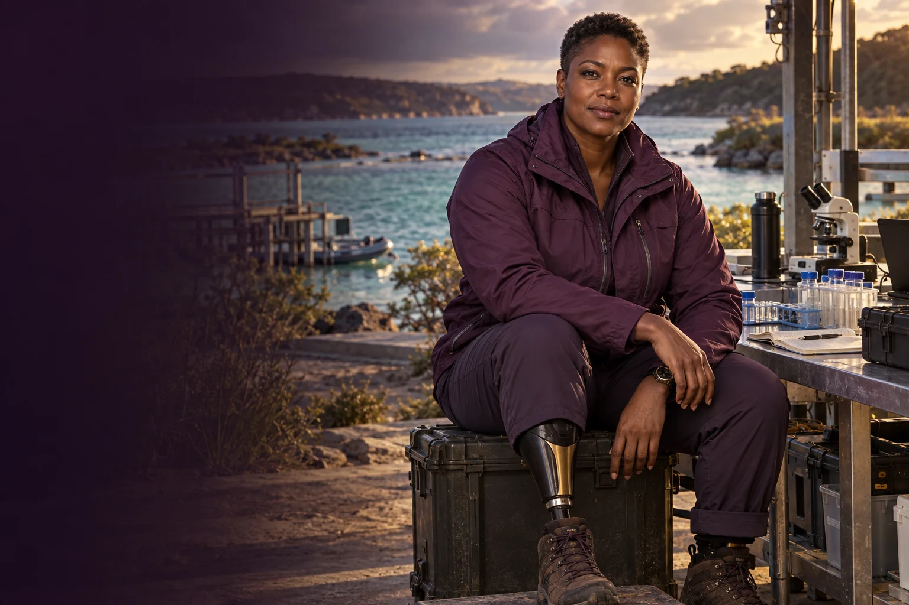
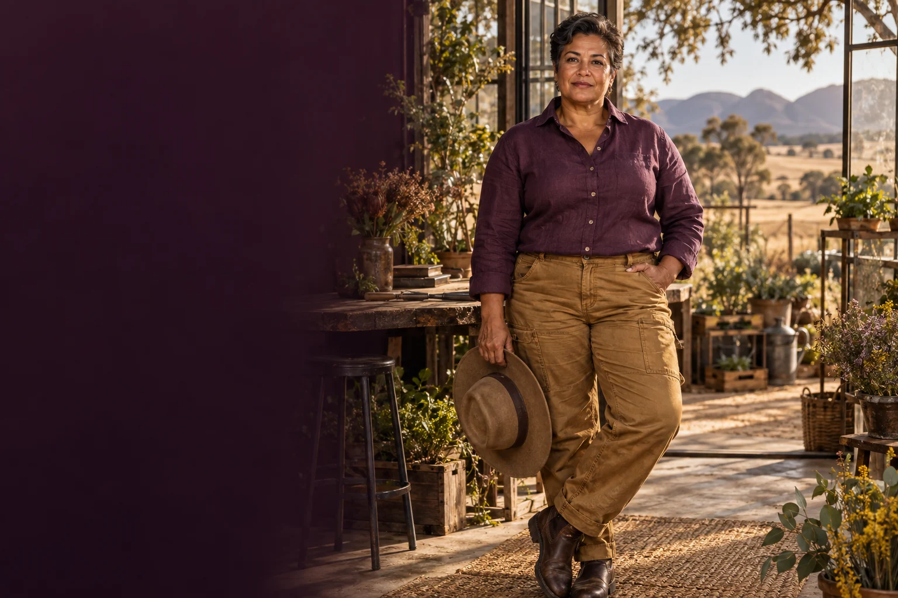
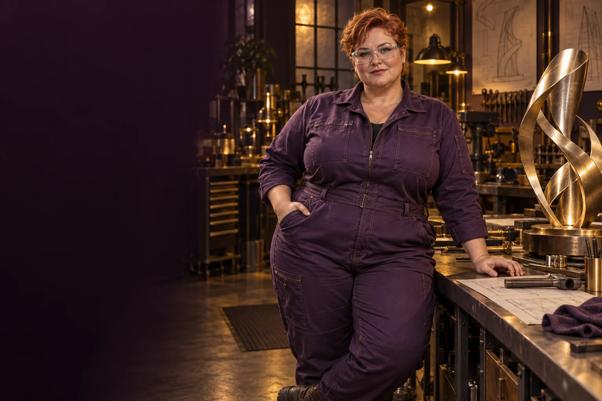

Frame the water problem
Identify the location, users, current conditions and measurable change a service would aim to achieve.

Follow the connections. Choose your direction.
River helps founders connect water services, catchment restoration and coastal enterprise with measured conditions and local relationships. She looks upstream and downstream so a useful intervention in one place does not simply move the problem elsewhere.
Patient, investigative and candid. She asks where a number came from and whose experience is missing.
River Queen · fictional AI mentor characterWater security, restoration and the blue economy.
River begins with a map of the water and the work around it: supply, use, storage, treatment, discharge and monitoring. She helps a team find a manageable question rather than promising to solve an entire catchment with one product. Local observations and maintained instruments matter as much as a striking visual model.
Her blue-economy lens joins ecological conditions with livelihoods, access and operating costs. A coastal service may involve residents, tourism operators, researchers and public authorities with different needs. River helps prepare a shared brief and identify the people who can interpret the evidence.
Identify the location, users, current conditions and measurable change a service would aim to achieve.
Choose observations, sampling routines and records that can support a specific decision.
Map maintenance, access, equipment, funding and follow-up alongside a proposed ecological benefit.
A founder wants to offer local water monitoring but has not chosen the customer or decision it would support.
Ask prospective users which water decisions are currently difficult.
Identify existing records and the remaining information gap.
Prepare a limited monitoring plan with a baseline and interpretation support.
Compare the usefulness and cost of the result with existing alternatives.
A monitoring service brief, a baseline plan and a customer review question.
Local participants and relevant water specialists review the sampling and interpretation.
A written preparation guide for your own use with a human mentor or AI assistant.
Ask what the women involved want and need from this environment or system. Bring the Queen's perspective to that conversation, with women from the relevant places, backgrounds and ways of living shaping the answers.
Explore the central equality question →These are proposed learning connections. Choose a brief, follow its evidence questions and bring the people affected into the work.
Turn fleet cleaning into a measurable service for workers, vehicles and water use.
Practical pilot
Find a coastal energy use that might justify careful testing of tidal or wave technology.
Engineering development
Test whether a solar desalination concept can produce useful water with a manageable maintenance burden.
Engineering development
Assess pumped water storage as one option for matching energy supply with the times people need it.
Engineering development
Explore hydrogen only where a specific customer's need survives comparison with direct electricity and other options.
Engineering development
Build a seafood service that connects reliable supply, care for waterways and a product customers value.
Practical pilot


Begin with relationship, place and the people entitled to speak.
The Queen's name and broad council strand come from the original 500 Queens material and the September 2026 planning document. This detailed personality, working method, sample session and visual representation are new proposed character development for community review. They do not describe a real person or a currently operating mentoring service.